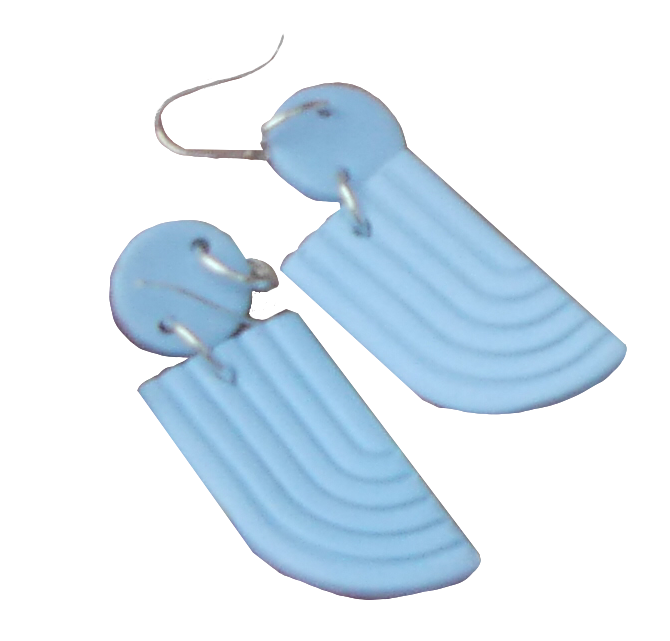

Even during an unconventional quarter, students at Northwestern
remain busy balancing courses and extracurriculars — and becoming
entrepreneurs. Student-run businesses have always had a place in
Evanston, but in the midst of a pandemic, some have turned their
passions into profits. We spoke with five enterprising Wildcats to see
how they’ve continued their work.
Whipped Evanston
Less than a week into running Whipped Evanston, a custom cake and
cupcake shop, Weinberg third-years Pranavi Ahuja and Sana Kharbanda had
already learned a valuable lesson. The two friends had just set aside
one of their first orders to frost when they noticed a cupcake missing.
“One of our friends came over, and he had no idea that these were for
Whipped,” Ahuja says. “He thought it was just another trial round of
cupcakes, and he just ate one.”
Scheduled to deliver in an hour, Ahuja and Kharbanda remade the entire
batch from scratch.
“The lesson we learned from that was definitely to hide our cupcakes as
soon as we make them,” Ahuja says.
Ahuja and Kharbanda started Whipped in early January after struggling to
find a bakery in Evanston that sold the fully customizable cakes and
variety of flavors they were seeking. Whipped currently offers vanilla
or chocolate cake, five icing choices and an optional Nutella filling
for cupcakes.
Since starting the home bakery, Ahuja says that business has moved
faster than expected. She initially thought a few friends would support
their efforts, but word about Whipped has traveled.
“Honestly, it just boomed, especially around Valentine’s Day,” Ahuja
says. Whipped made over 200 cupcakes for the holiday; news had reached
parents’ groups, and many people started ordering for their children.
Despite the increased time commitment, Ahuja has no second thoughts
about starting Whipped. She believes her passion for baking grows with
every batch.
“On Valentine’s Day... was there a moment when I was like, ‘Oh my god,
I’m tired?’ Yes,” Ahuja says. “But was there a moment that I was like,
‘Oh, I don’t want to do this?’ Not at all.”
Ahuja and Kharbanda aren’t looking to expand beyond their apartment
anytime soon, but they are considering adding more desserts, such as tea
cakes, cookies and brownies. Above all, they want to ensure each product
is tested to perfection, no matter the menu size.
“We’re definitely trying out a bunch of different things in our kitchen
right now, and we’re super excited to hopefully introduce them on the
menu sometime pretty soon.” Ahuja says.
Friends Who Earring
Cate Durudogan and Claire Koster didn’t set out to start a business.
Friends Who Earring, which sells handmade polymer clay earrings, began
as a hobby that the two SESP third-years bonded over. Koster started
making earrings over winter break during her first year at Northwestern,
inspired by a friend who made wire earrings. She and Durudogan shared a
peer advising group but did not become close friends until she invited
Durudogan to make earrings with her after the break.
“When I first met her, I was like, ‘She has cool earrings, I want to be
her friend. How can I wear her down and force her to befriend me?’”
Koster recalls. “So, I was like, ‘Cate would like making earrings. This
would work.’”
Soon, they were spending Friday nights making earrings in the common
spaces of Koster’s first- year residential hall, South Mid- Quads. They
eventually gave some away to friends, and others expressed interest in
buying them.
Friends Who Earring now has more than 3,800 Instagram followers and over
2,400 sales on Etsy. But despite their growth, Durudogan and Koster run
Friends Who Earring with a unique business model: They don’t profit from
sales. Instead, all profits go directly to community organizations,
mainly those in their hometowns of Chicago and St. Louis, such as
Project Fierce Chicago and the STL Reentry Collective. The idea came
after their first sale in June 2019.
“I was wearing all the earrings I had been making around my coworkers
and friends, and when they found out I was making them, they were like,
‘Could you make me a rainbow flag pair?’ or ‘Can you make me a
bi/trans/pan flag pair?’’’ Durudogan says. “I’m not going to profit off
of rainbow capitalism.”
Durudogan and Koster donated that month’s profits to the Oakland-based
National Queer and Trans Therapists of Color Network.
“We can make ends meet without pocketing the money, and we have other
sources of income,” Koster says. “It was exciting to think about how a
consistent base of money to make donations from could enable us to
support what we wanted to.”
After the first donation, Koster suggested giving away their profits
monthly. Now, Friends Who Earring chooses a new organization to give to
every month, thoroughly researching each one.
“It’s really important to us that they’re run by people who live in the
communities that they are working to support and serve,” Koster says.
“If it’s an [organization] that’s for Black lives, in the vaguest terms,
and it’s all white people on the staff and board, it’s like, ‘I don’t
know if you’re the one that we’re going to give our money to.’”

The two friends emphasize that the real impact is made by the
organizations they donate to.
“Part of the function that I hope the donations have is to create an
impact while de-centering ourselves in that impact,” Koster says. “We
can love social justice as much as we want, but we’re still two white
women, and the things that white women do in spaces of social justice
isn’t always additive.”
Ultimately, the pair hopes to continue Friends Who Earring without
pressuring themselves to reach a certain goal or social media following.
“We just want it to keep being us,” Durudogan says. “I think we have
seen this growth of other artists redistributing some of their wealth,”
she adds, noting an increasing trend among earring makers. “I think
that’s really beautiful growth to see.”
The Table
When Weinberg fourth-year Matt Schnadig was a first- year, he was
shocked by the limited late-night food options in Evanston. Prior to
starting college, he had seen his sister and his friends frequent many
late-night food spots at other universities.
“If you go out or go to a party, or just after studying and you want to
just decompress, late-night food was kind of that outlet,” Schnadig
says. “There wasn’t really anything like that here.”
Schnadig envisioned a student-run food service that offered late-night
breakfast food. In a collaboration with BrewBike, the team started
selling overnight oats in 2018, eventually offering breakfast sandwiches
and smoothies from an on-campus food cart in Spring Quarter of 2019.
Despite initial success, they ran into issues last fall.
“We didn’t want to stand outside in the cold selling food, and also our
food ended up getting cold,” Schandig says. “Then COVID hit, which was,
in a weird way, a good thing for us because it gave us some time to
reevaluate.”
The Table now operates as a late-night food service, delivering chicken
nuggets, chicken sandwiches, fries and milkshakes made by Northwestern
student cooks to students in Evanston. Running as a “ghost kitchen,”
orders are received and prepared from a kitchen at Ebenezer AME Church
before being delivered.
“Operationally, it’s a lot more simplistic than what we had been doing,
and it’s also reverting back to our original plan — our original hope of
adding more late-night food options on campus,” Schnadig says.
Since relaunching, Schnadig says The Table has received mostly positive
customer responses and aims to tailor its menu to student feedback. Due
to high demand, The Table recently added ranch sauce and milkshakes.
“Once we did, everyone was getting milkshakes, which was really
exciting,” Schnadig says. “It showed that our customers’ opinions really
do matter.”
More than homemade recipes, fresh ingredients and food quality, Schandig
says The Table prides itself on being a student-led venture and hopes it
can be passed down as a club would.
“It’s this outlet for students to get some real-life work experience,”
Schnadig says. “Students who like to cook; students who just want to
make money; [it] really gives them that opportunity to grow and
succeed.”
For Schnadig, The Table has enabled him to pursue a unique project
alongside friends and to learn about business operations outside of
coursework.
“I would say this has been the most beneficial experience for me in
terms of learning, more than any class I’ve taken at Northwestern,”
Schnadig says. “A class can teach you how to do finances or market
research — all of which are important, but in terms of actual
operations, which, personally, I think is the most important, that’s
really just getting in there and going for it and making mistakes and
learning from those mistakes.”